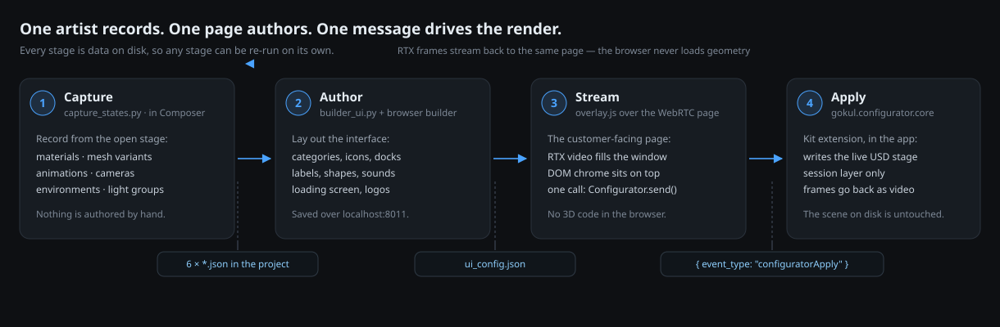
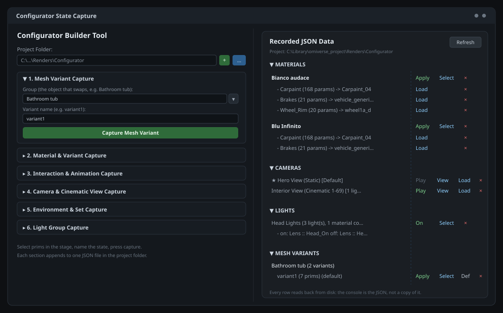
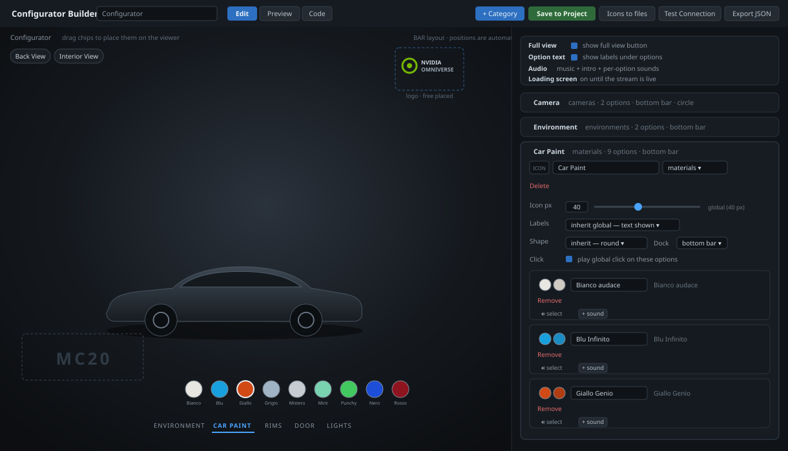
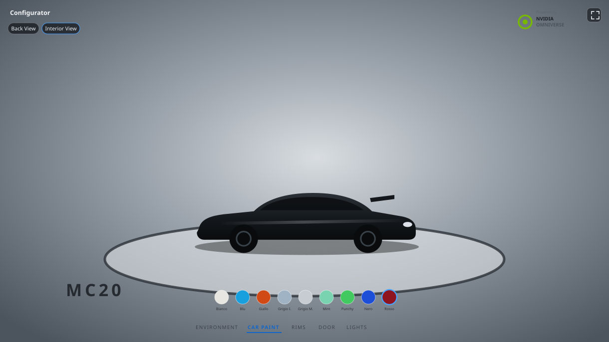
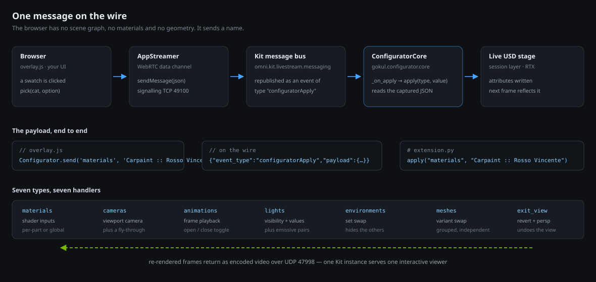
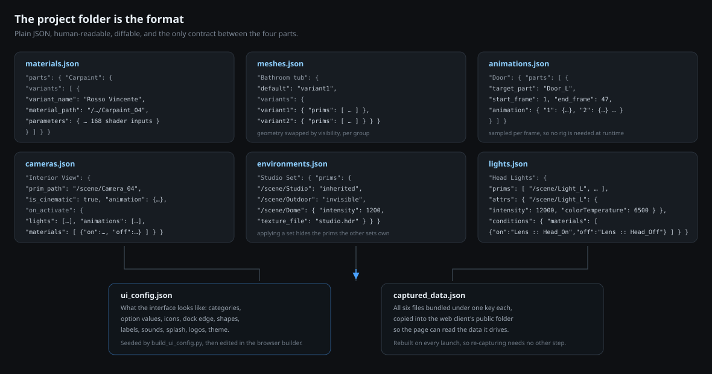

1 · Capture
A panel inside Omniverse Composer. Select prims, name the state, press capture. It records materials, geometry variants, part animations, cameras, environment sets and light groups as JSON.
configurator_toolkit/capture_states.py
NVIDIA Omniverse Kit · OpenUSD · WebRTC
Four parts that share one folder of JSON. An artist records the states a scene can be in, straight from the stage they are already working in. A browser page lays out the interface over the render. A Kit extension applies each choice to the live USD stage, and the RTX frames stream back to the same page. No geometry is shipped to the browser, and no scene file is ever modified.
Most product configurators are hand-built per project: someone re-authors the materials, re-rigs the doors, re-implements the camera moves and then writes the UI twice. This toolkit removes that step. The scene an artist already lit and shaded is the source of truth — the tooling reads state out of it and plays state back into it.
A panel inside Omniverse Composer. Select prims, name the state, press capture. It records materials, geometry variants, part animations, cameras, environment sets and light groups as JSON.
configurator_toolkit/capture_states.py
A five-step launcher in Kit plus a builder page in the browser. Place category chips, pick icons and shapes, attach sounds, choose which edge each group docks to, then save back into the project.
builder_ui.py · build_ui_config.py
The customer-facing page: an RTX video stream filling the window with plain DOM chrome on top. Editable HTML, CSS and JS per project, so a client's brand does not fight the tool.
overlay_default/overlay.{html,css,js}
A Kit extension inside the streaming app. It receives one message type, resolves it against the captured JSON and writes the live stage — into the session layer, so nothing is persisted.
gokul.configurator.core
Each stage hands the next one a file, never a live object. That is the reason any stage can be re-run on its own: re-capture a door without touching the UI, restyle the UI without re-opening Composer, or ship a launcher that runs the whole thing with Composer closed.

A two-pane window that runs inside Composer. The left pane is six capture sections. The right pane is a live console over the JSON on disk — every row reads back from the file, so what you see is the data, not a copy of it. Each row can re-apply the state to the stage, select its prims, or delete the entry.

Carpaint :: Rosso Vincente) so paint,
rims and calipers change independently.
The captured JSON says what the scene can do. This says what the customer gets to choose. It runs as a page in the browser, driven by a small aiohttp endpoint living inside Kit, so pressing Save writes straight into the project folder.

assets/, never inlined into the config.ui_config.json.ui_config.json — categories, options, icons, docks, theme, audio, splash.captured_data.json — the six files bundled for the browser.overlay.html / .css / .js — per-project, editable, seeded from the defaults.configurator_builder.html — the builder page itself.launch_configurator.bat — the standalone launcher.assets/ — uploaded icons, logos and sounds, mirrored into the web client.What the customer opens. The RTX render fills the window as video; everything else is ordinary DOM on top, which is why it can be restyled per client without touching the 3D side. Empty space passes clicks through to the stream, so the model still orbits.

// pick a swatch -> drive the render
Configurator.send('materials', 'Carpaint :: Rosso Vincente');
Configurator.send('meshes', 'Bathroom tub :: variant2');
Configurator.send('cameras', 'Interior View');
Configurator.send('exit_view', ''); // leave the view, restore the car
That is the entire API. Replace overlay.js with your own UI and call the
same function — the rest of the toolkit does not change.
aria-label, and only drop the label when an icon actually exists.The only part that touches USD at runtime. It subscribes to one event type on the Kit message bus, resolves the value against the captured JSON and writes the stage. Every write goes into the session layer, so the file on disk is never modified and restarting the app is a full reset.

| Message type | What it does | Worth knowing |
|---|---|---|
materials |
Writes every recorded shader input on the material and its descendants. | Guarded per parameter: one bad value skips itself instead of half-applying the paint. Vector arity is checked, because two shader nodes under one material can expose the same input name with different types. |
cameras |
Switches the viewport camera, applies the view's conditions, and flies a recorded camera move. | Leaving one view undoes it before entering the next, so states never stack. The move is timed against the wall clock, not one frame per tick, so it lasts the same on a fast machine. |
animations |
Walks the recorded frames forward to open, reversed to close. | Toggles by name, so the same chip opens and closes. |
lights |
Restores the recorded values, toggles visibility, applies the emissive pairs. | Values are only restored on the way on: an invisible light contributes nothing, so there is no inverse to record. |
environments |
Shows one set and hides the prims owned by the others. | The hide-set is derived from the data, so it is right on the first click with no memory of a previous state. |
meshes |
Shows one variant of a group, hides that group's other variants. | A prim shared by two variants stays visible. Group :: None hides all of them, for an optional part. |
exit_view |
Reverts everything the current view switched on and returns to the free camera. | Cancels a camera move still in flight, so two animations never fight over the prim. |
Six files, flat in the project folder, indented JSON. Readable in a diff, editable by hand, and the only thing the four parts agree on.

The parts of the job that took the longest were not the features. These are the failures that shaped the design.
With an OS window, Windows clamps it to the desktop work area — a requested
2560×1440 becomes 2517×1440 — and the livestream plugin then rejects
every frame, because the resolution no longer matches what the client
connected with. The page stays black forever while the log cheerfully reports
"RTX ready". --no-window takes the window manager out of the path.
If Composer is running with streaming extensions enabled it already holds the
ports, and the app dies with NVST_R_BUSY behind a black video. The
launcher checks the three ports up front and names the process holding them,
instead of leaving that to be debugged. NVST_R_FRAME_DROPPED, by
contrast, is just load and is safe to ignore.
__file__
Omniverse's Script Editor copies your buffer to a temp file before running it, so
__file__ points at %TEMP% and every "sibling of this
script" lookup silently lands in the wrong folder. The toolkit directory is
resolved by looking for known marker files, not assumed.
The capture window builds its widgets lazily through a build callback, so setting a field right after constructing the window writes to nothing and is then overwritten. The project folder is therefore injected into the script's namespace before it runs, and read during the build.
Lights invert to off and an animation has a closed frame, but a material has no
derivable opposite. So a material condition is stored as an explicit
{on, off} pair, and a half-filled pair is refused at capture time —
applying one direction with no way back is worse than not wiring it at all.
Environment sets and mesh variants both work out what to hide from the data every time, rather than tracking what was applied last. That is correct on the first click in a freshly started app, and it self-corrects after anyone changes visibility by hand in the stage.
A car was the test case, not the point. It is a useful one because it exercises everything at once: 175 meshes and roughly 287k faces, 65 materials across UsdPreviewSurface and MDL, 9 lights, 6 cameras, doors driven by OmniGraph rather than keyframes, and no USD variant sets at all — which is exactly why variants are captured as prim visibility instead.
Live streaming is one interactive viewer per Kit instance, so the RTX demo runs by arrangement rather than as a public link. A self-contained WebGL build of the same interface is the next piece of work.
The car model is a third-party asset used for testing only; it is not part of this toolkit and is not redistributed here.
The toolkit, the Kit extension and this site.
The streamed build is 1:1 by nature. Open an issue on the repository to arrange a session, or to ask about a specific part of the pipeline.